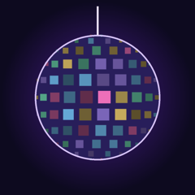
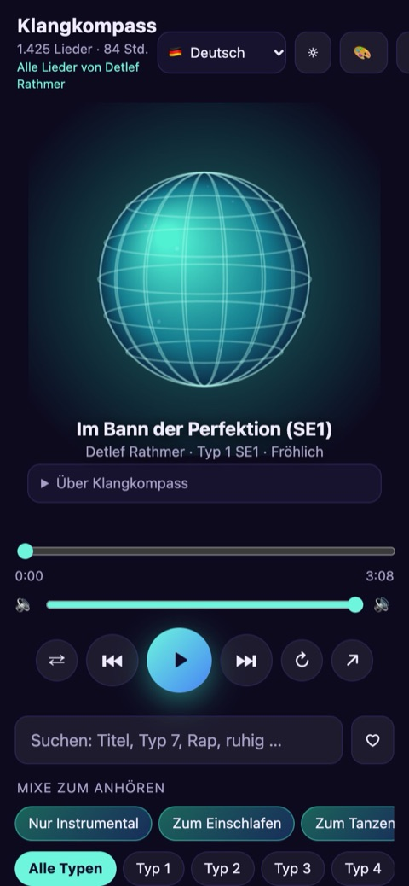
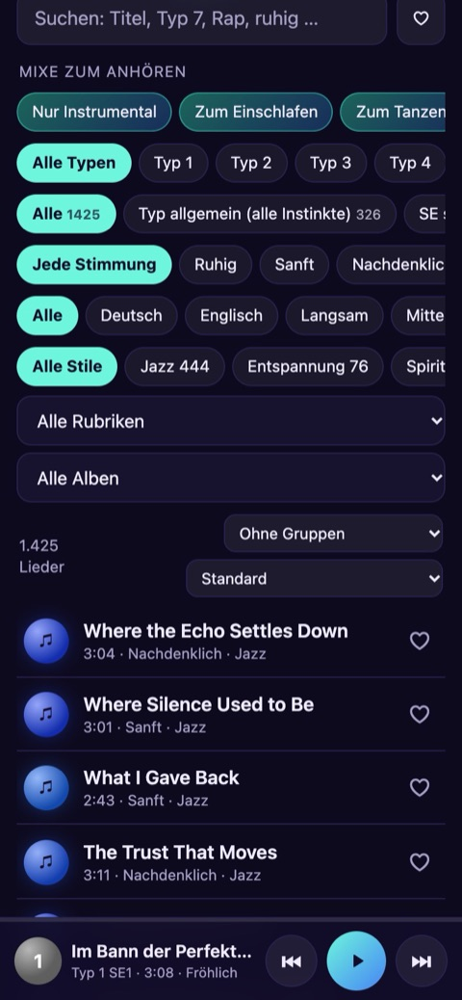
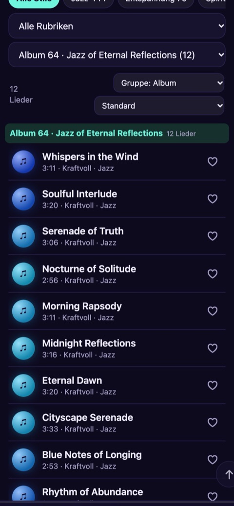
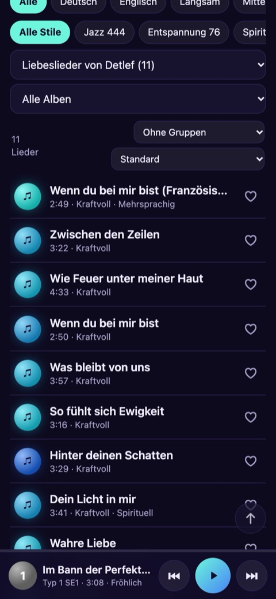
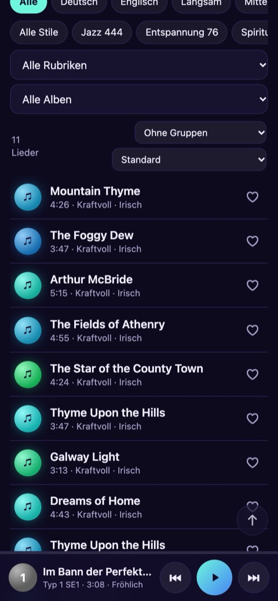
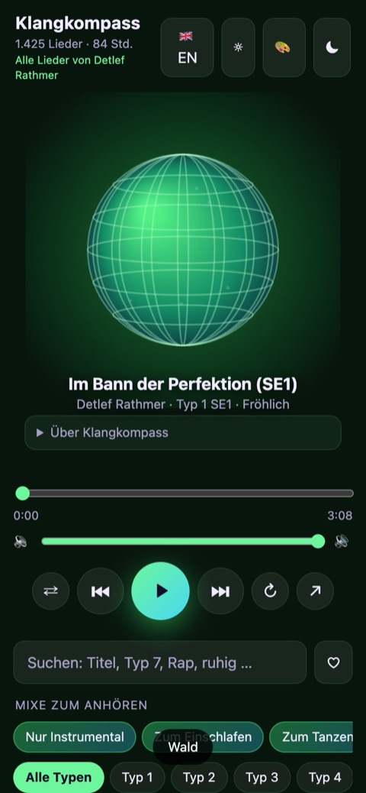

Die Musik-App

Klangkompass
Alle Lieder von Detlef Rathmer, an einem Ort.
Zu den Themen seines Lebenswerks äußert sich Detlef Rathmer seit zwei Jahrzehnten auch musikalisch, begleitend zu seiner therapeutischen Tätigkeit, seinen Büchern, Apps und Kalendern. Der Klangkompass bündelt diese Lieder: über 1.400 Stücke, die sich nach Typ, Stimmung, Stil und Album finden lassen. Dazu eine Kugel, die im Takt des Liedes pulsiert.
Bald verfügbar
Mehr über den AutorDie App erscheint demnächst, auf Deutsch und Englisch. Zum Kennenlernen gibt es Hörproben; für alle Lieder ist eine einmalige Zahlung von 9,99 € vorgesehen, ohne Abo. Den Starttermin geben wir hier bekannt.
Ein Blick in die App
So sieht die App auf dem Handy aus.






Was die App bietet
Alle Lieder von Detlef Rathmer an einem Ort: Enneagramm, Jazz, Spirituelles, Liebeslieder, Humor und viele Stile.
Typ 1 bis 9, dazu die Instinkte SE, SO und SX. Jeder Typ hat seine Farbe. Lieder für den ganzen Typ stehen für sich.
Ruhig, sanft, nachdenklich, fröhlich oder kraftvoll. Mixe wie „Zum Einschlafen“, „Zum Tanzen“ oder „Nur Instrumental“.
Jazz, Irisch, Bossa Nova, Reggae, Klassik, Rap, Comedian-Harmonists-Stil und mehr. Rubriken wie „Liebeslieder von Detlef“ und „Spirituelle Songs“.
Mehr als 50 Alben, nach Nummer geordnet, von den Genre-Alben über die Heilungsmusik bis zu den Jazz-Alben.
Weltkugel, Discokugel oder Wellen: Die Bilder pulsieren im Takt des Liedes. Sieben Farbwelten zur Wahl.
Ein Filter trennt Lieder mit Gesang von reiner Musik, etwa zum Lesen, Arbeiten oder Einschlafen.
Merken Sie sich Lieder, stellen Sie eine Einschlafzeit ein und teilen Sie ein Lied per Link.
Sprachen
Englisch, Deutsch, Französisch, Portugiesisch (Brasilien), Russisch, Hindi, Chinesisch, Spanisch, Italienisch, Türkisch und Ukrainisch. Ein Filter in der App zeigt die Lieder je Sprache.
Der Autor
 Detlef Rathmer
Detlef RathmerSachbuchautor, Enneagramm-Experte, Dozent und Coach. Seit dem Jahr 2000 als Heilpraktiker tätig, mit dem Schwerpunkt klassische Homöopathie.
Hinweis: Die Musik dient der Entspannung und Besinnung. Sie ist keine Behandlung und kein Ersatz für ärztliche oder psychotherapeutische Hilfe.